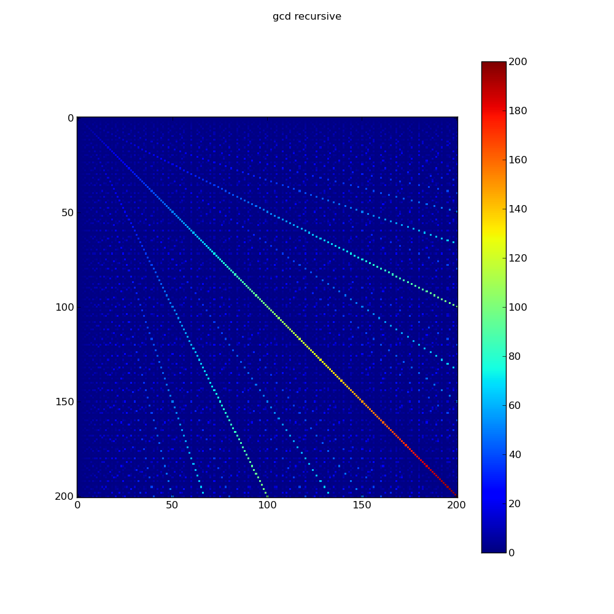
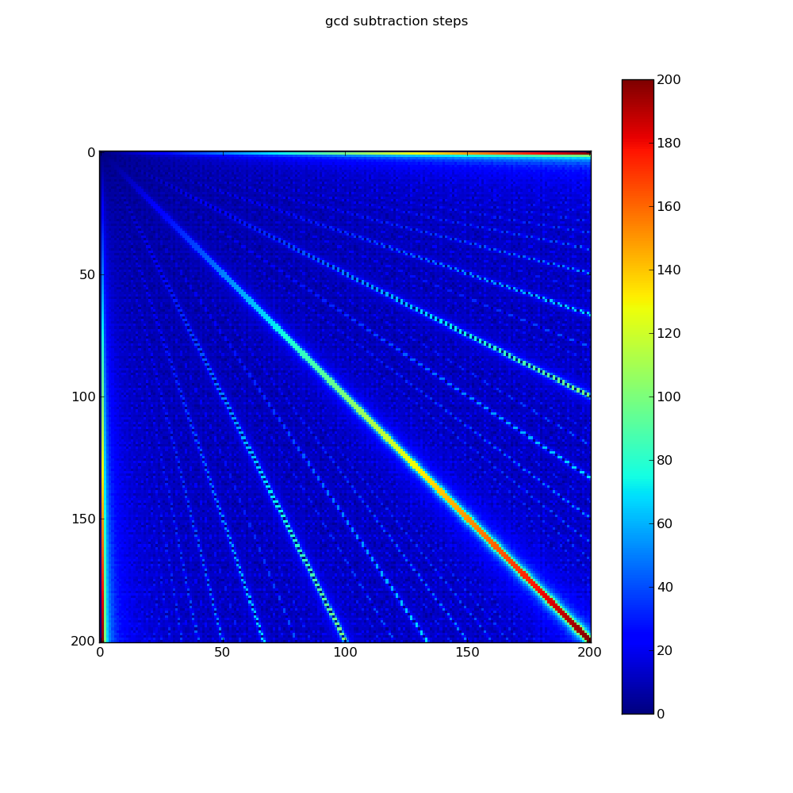
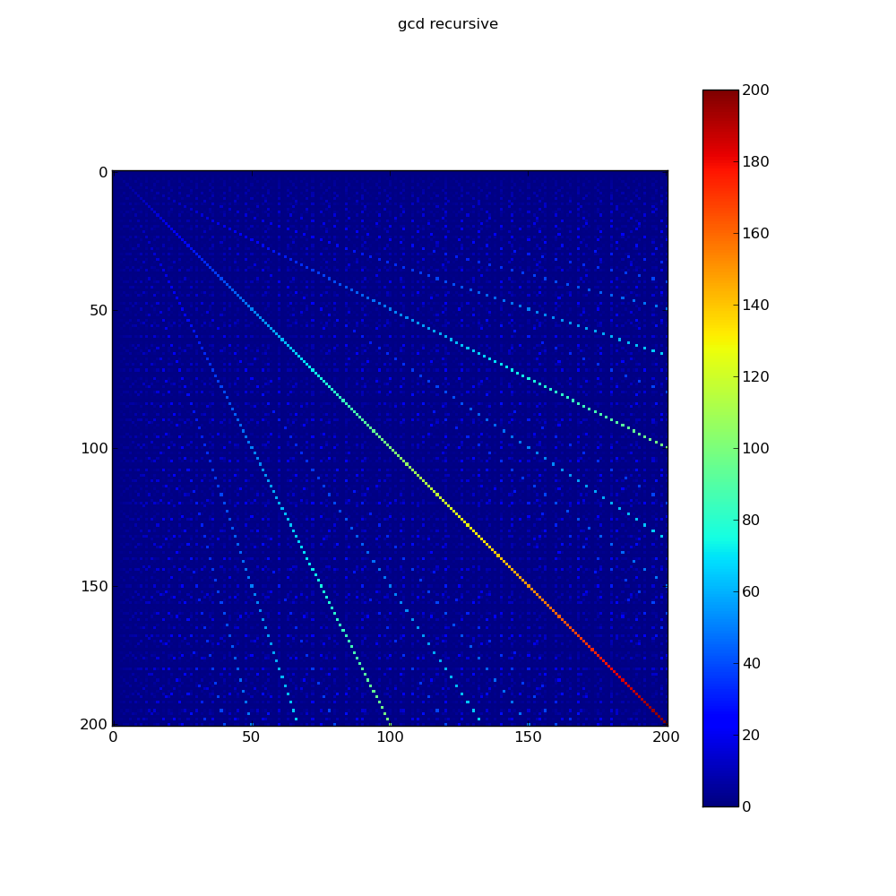
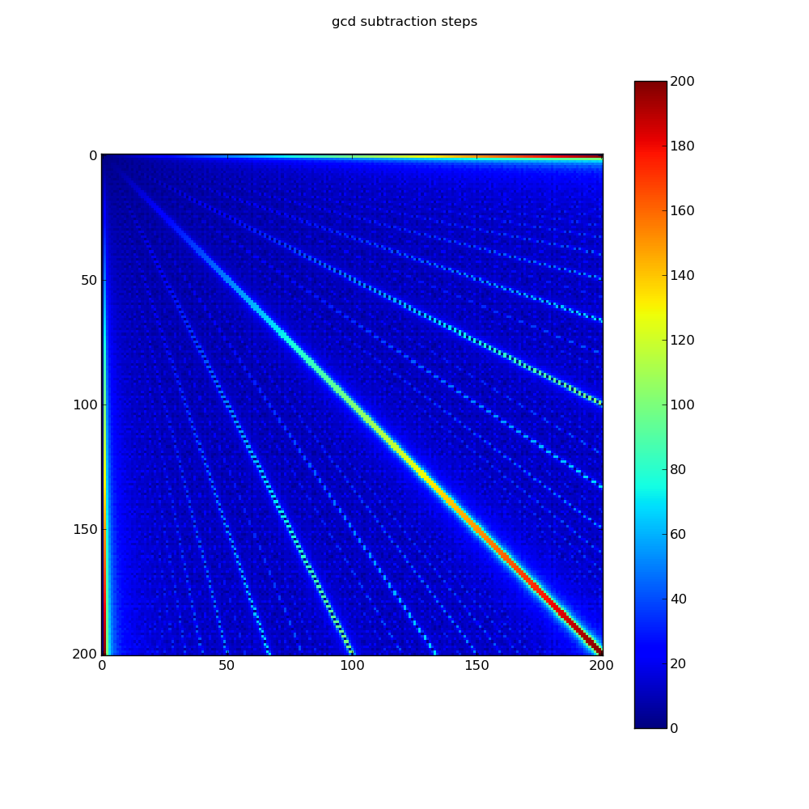
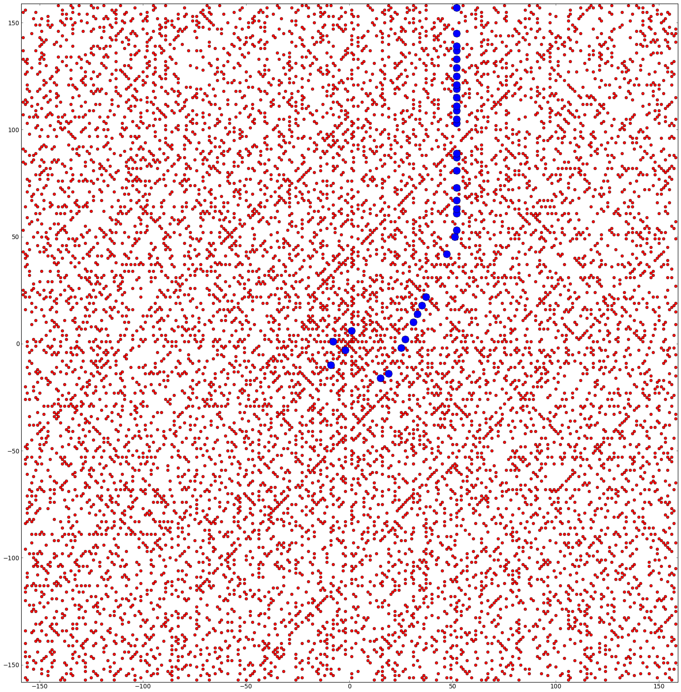

Click here to see the code.
{% elif task == 'gcd' %} 



Click here to see the code.
{% elif task == 'ulam_spiral'%} Click here to see the code.
{% elif task == 'shapes' %}


Click here to see the code.
{% elif task == 'polygon' %}
Click here to see the code.
{% elif task == 'effects' %}

Click here to see the code.
{% elif task == 'hide_and_seek' %}


Click here to see the code.
{% elif task == 'pascal' %} {% endif %} {% endblock %} {% block side_container %} {% endblock%}